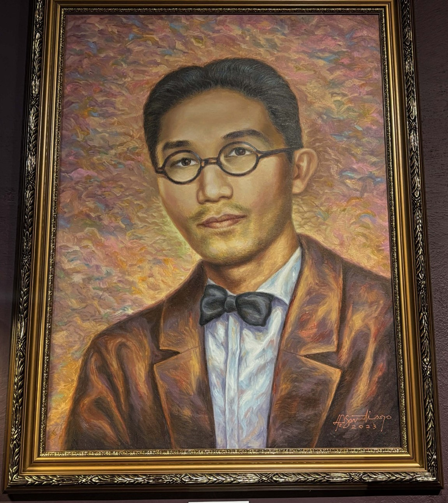
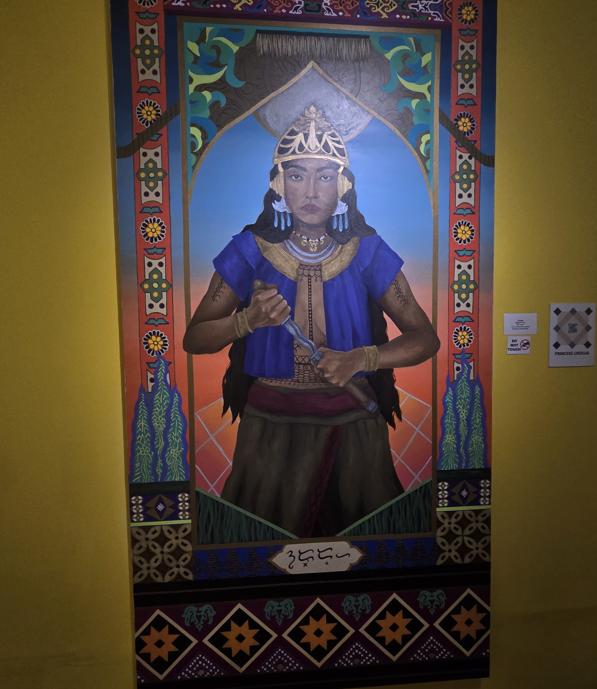
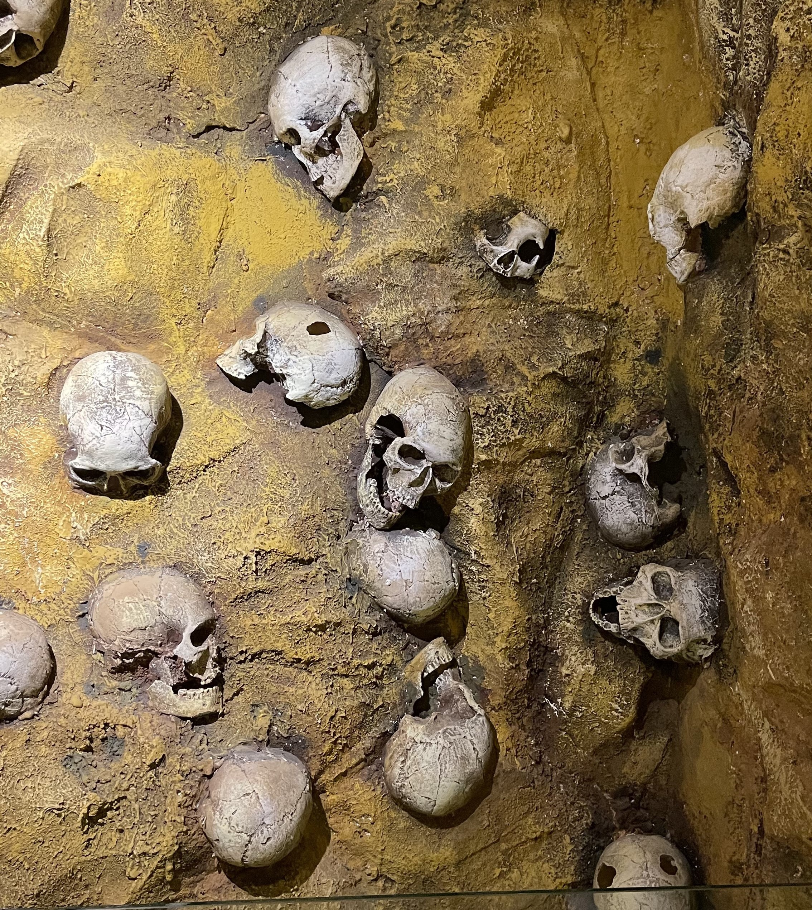
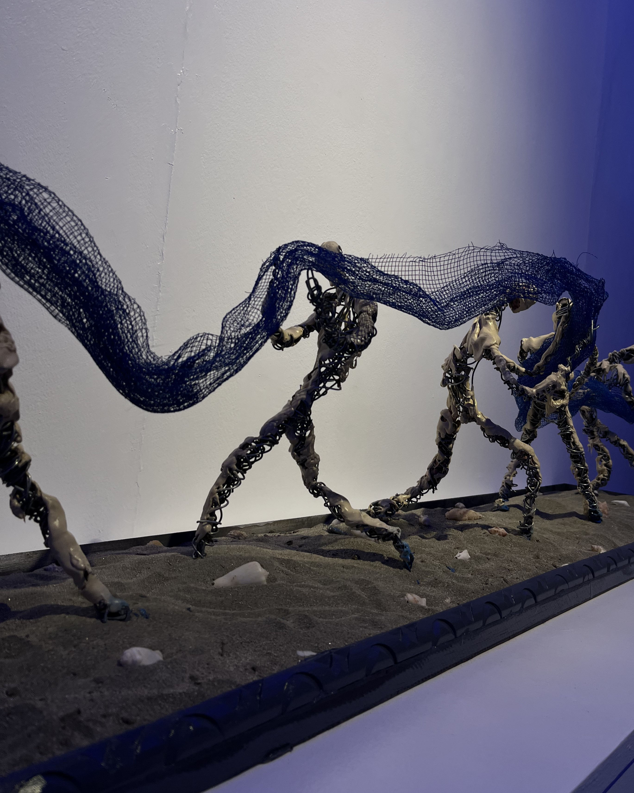
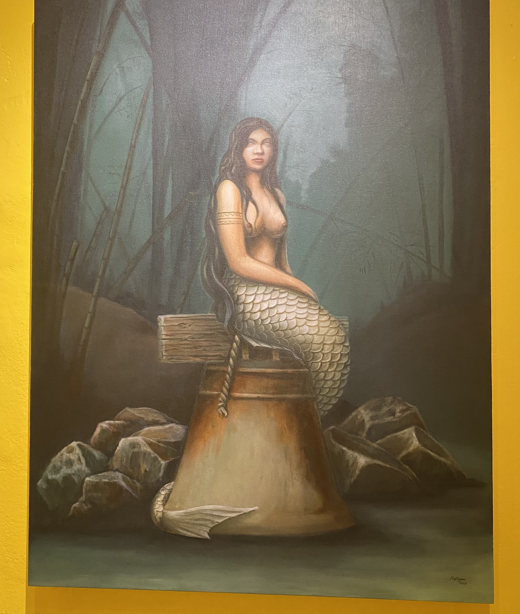

Subject
The exhibit highlights portraits, legends, artifacts, labor, and river folklore rooted in Pangasinan.
Virtual Exhibit
This virtual exhibit explores how history, folklore, and everyday life shape the cultural identity of Pangasinan across time.
Exhibit Focus
Introduction
The exhibit highlights portraits, legends, artifacts, labor, and river folklore rooted in Pangasinan.
Each artwork reveals pride, empowerment, status, resilience, or mystery within local cultural life.
The works connect pre-colonial memory, modern art history, traditional labor, and regional storytelling.
Gallery
Click any artwork card to view its subject, content, context, and interpretation.

Featured Work
Danilo Santiago

Folklore
Margaret Estelle Blas

Archaeology
Unknown

Community Life
Mark Delos Santos

Legend
Prince Logan
Curatorial Note
Pangasinan's memory, myth, and identity is a curated exhibition that explores how history, folklore, and everyday life shape the cultural identity of Pangasinan across time.
The Bolinao Skull represents the deep historical foundations of Pangasinan society.
Princess Urduja symbolizes strength and leadership in pre-colonial society.
The Portrait of Victorio Edades highlights modern artistic transformation.
Kalukor reflects contemporary community life and cooperation.
Together, these works show how identity is preserved through memory, reinterpreted through art, and lived through community.
About the Museum
Built in 1840, Casa Real served as a former capitol, school, and World War II headquarters before its restoration into a museum.
The building preserves Spanish-era architecture and was declared a historical landmark in 2002.
Now home to 11 galleries, the museum safeguards the cultural memory of Pangasinan through exhibitions and public education.